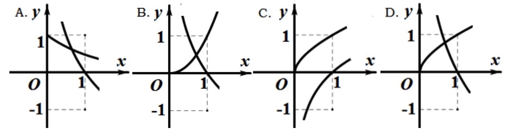

2017-浙江-理-5 【分类讨论】
若函数f(x)=x2+ax+b在区间[0,1]上的最大值是M,最小值是m,则M−m
A.与a有关,且与b有关
B.与a有关,但与b无关
C.与a无关,且与b无关
D.与a无关,但与b有关
2017-浙江-理-17 【分类讨论】
已知a∈R,函数f(x)=|x+4x−a|+a在区间[1,4]上的最大值时5,则a的取值范围是()
2014-浙江-理-7 【分类讨论】
在同一直角坐标系中,函数f(x)=xa(x≥0),g(x)=logax的图像可能是

2016-浙江-理-18 【分类讨论】
已知a≥3,函数F(x)=min{2|x−1|,x2−2ax+4a−2},其中min(p,q)={p,p≤qq,p>q
(I)求使得等式F(x)=x2−2ax+4a−2成立的x的取值范围
(II)(i)求F(x)的最小值m(a)
(ii)求F(x)在[0,6]上的最大值M(a)
2015-浙江-理-18 【分类讨论】
已知函数f(x)=x2+ax+b(a,b∈R),记M(a,b)是|f(x)|在区间[−1,1]上的最大值
(I)证明:当|a|≥2时,M(a,b)≥2
(II)当a,b满足M(a,b)≤2,求|a|+|b|的最大值